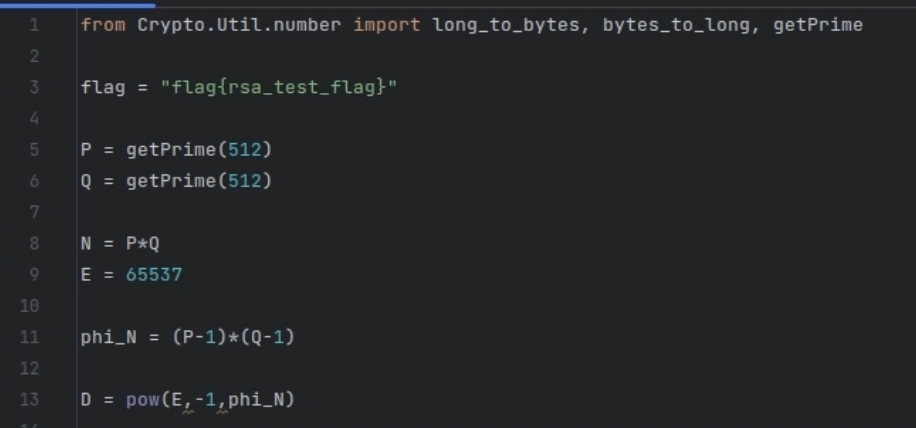
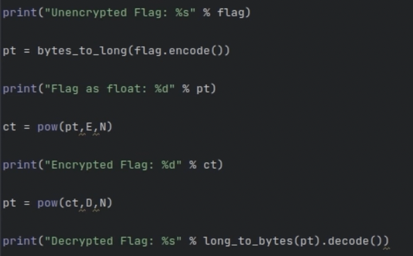
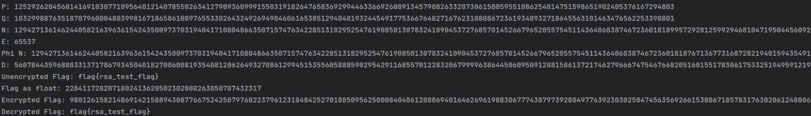

Building the RSA Algorithm in Python

The RSA Algorithm is a asymmetric encryption technique that uses two keys. A private key and a public key. The first step in building the two keys is to get 2 prime numbers. Now these prime numbers are going to be pretty big because we have to make it secure. You then have to compute n and Φ(n). Now n is going to be p*q (your two prime numbers that you chose) and your Φ(n) is going to be the "totient" of your n, or just Φ(n) = (p-1)(q-1). N is going to be apart of your private and public key while Φ(n) is a number that we compute from n that helps us pick the exponents correctly so that the encryption and decryption perfectly undo each other. It just makes everything in your system consistent.
You then choose e (with e < n) that has no common factors with Φ(n). So basically you are picking a public exponent e, so that it's smaller than n and e and Φ(n) share no prime factors. Why do we need this? Because we want to later find a number d that acts as the perfect “undo” of e. That only works nicely if e and Φ(n) are coprime. TLDR, you should usually pick e = 65537 because its prime and efficient for encrypting or validating signatures
Lastly you wanna find d, which is called the modular inverse of e with respect to Φ(n). Basically, it's figuring out a special number d that perfectly undoes what e does when we're working in modular math. D is the number that reverses whatever e does during encryption. So when a message is encrypted using the public exponent e, it can be decrypted using the private exponent d
Now you actually want to encrypt your flag. So first we want to translate the string into bytes by using the flag.encode() method, then we want to interpret those bytes as one big integer using the bytes_to_long function. Then you wanna encrypt your big integer with the public key using the pow function. Here it does pt^e mod n, which is RSA encryption. The result is the ciphertext, which is still a number. Then you can decrypt your cipher text using your private key using the pow function again. Here it does ct^d mod n, which undoes the encryption because d is the modular inverse of e. You then convert the integer back to bytes with long_to_bytes function and decode to a string so you can see the actual flag
I printed every variable so you can see the output of everything. You first see that p and q are huge. And then you multipy those together and get n which is an even bigger number. You can see e which is usually 65537. Then you have your Φ(n) which is used to calculate d. You can first see the unencrypted flag which is then converted to a number. Then when you do the process of raising that number to the e power mod n. You are given a giant number which is the encrypted flag. Then, you can decrypt it by taking the encrypted flag and raising it to the d power then taking the mod n. Finally you can have your decrypted flag.
